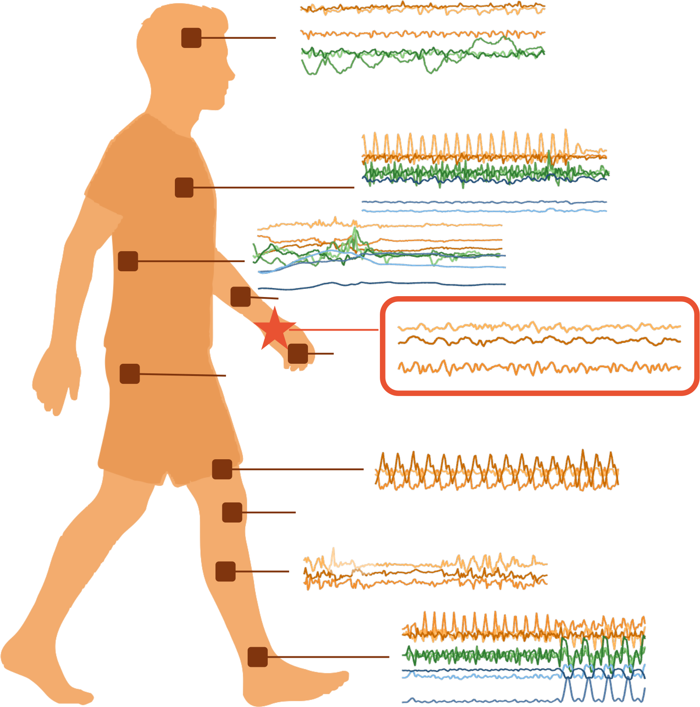
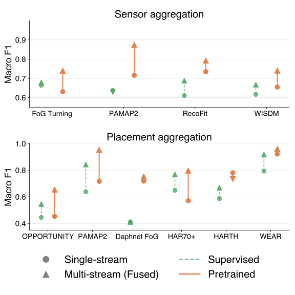
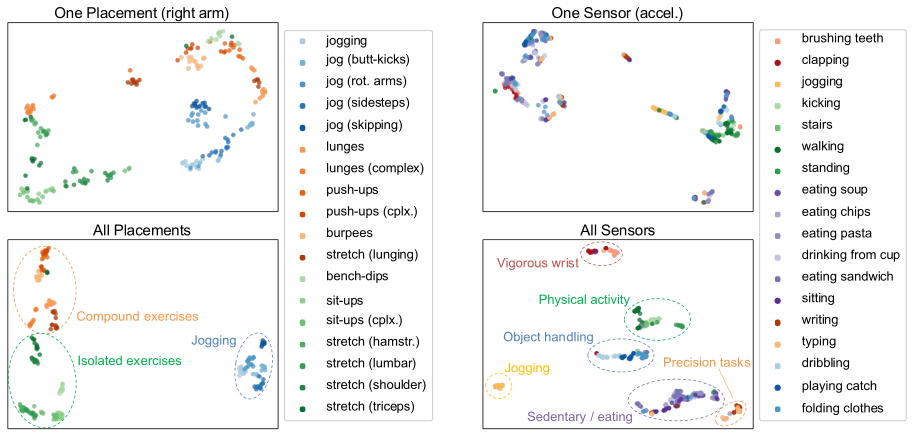

Motion is universal — but the models built for it weren't. Inertia-1 brings the whole landscape under one roof.
Datasets disagree on the basics — sampling rate, window length, sensor modality, body placement, even signal format — and every task gets its own bespoke model. Findings rarely carry from one setup to the next.
Inertia-1 studies the full lifecycle of motion models — data, sensing, objectives, and scale — inside a single, controlled space instead of isolated one-offs.
The payoff: one representation that adapts across placements, devices, and tasks — the same backbone, working far beyond the setting it was trained on.
Beyond benchmarks, Inertia-1 surfaces the choices that decide whether a motion model actually works in the real world.

Pretrain once on the wrist, then point the model anywhere. It holds up on body placements — and even sensor types like gyroscope and magnetometer — that it never saw during training. No retraining for each new spot on the body.


Stack on more streams — extra placements, gyroscope, magnetometer — and the learned representation gets both more accurate and cleaner, with activities separating into tighter clusters. The streams are complementary: each one catches something the others miss.
How you capture motion shapes what a model can do with it. A few practical rules of thumb from the study.
Pretrained models stay strong even at a low 1 Hz for activity recognition; finer-grained health signals benefit from higher sampling rates.
30–60 second windows hit the sweet spot across most tasks — long enough to capture context, short enough to stay sharp.
Full triaxial input consistently beats collapsed vector-magnitude summaries — the extra axes carry signal worth keeping.
Time-domain modeling preserves gait and health cues better than frequency-domain reconstruction.
The general representation comes together in three clean steps.
Learn from planetary-scale accelerometry — over 18 million hours across global cohorts — with self-supervision, no labels required.
Adapt the same representation to new placements, devices, and sampling rates with light tuning — or none at all.
Power activity, mobility, and health applications from one backbone — from fitness tracking to clinical screening.
The same representation spans the full spectrum of motion understanding.
Inertia-1 is a first step toward a unified motion foundation model — and an open invitation to collaborators with motion data, new tasks, or a shared interest in where the field is headed.